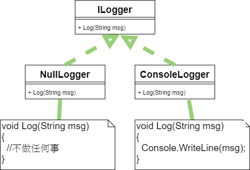
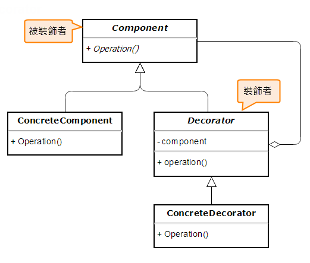
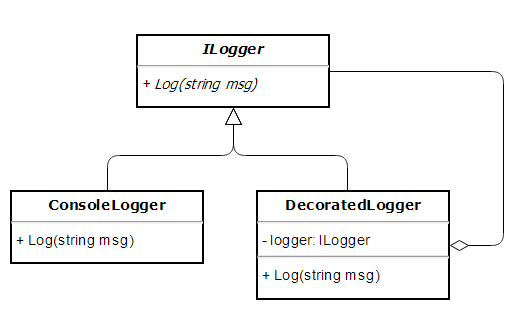
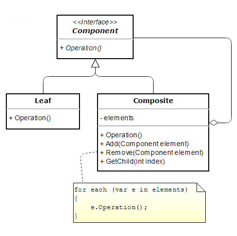
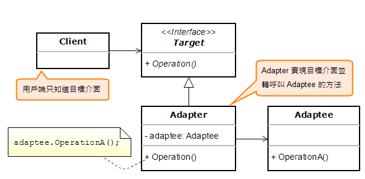
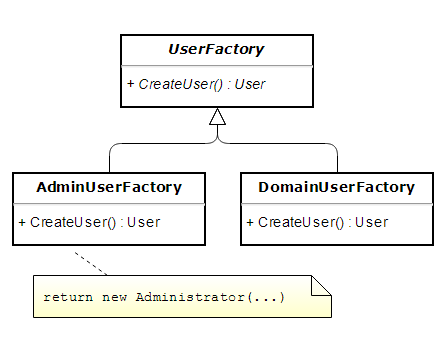
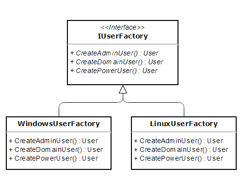
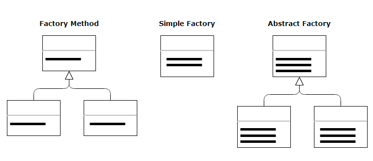

設計模式梗概
每個模式都描述了一個不斷發生在我們周遭的問題，然後描述該問題的核心解法，於是你便可以一再使用該解法，而無須對同樣的事情做兩次工。
—— Christopher Alexander. A Pattern Language.
Null Object 模式
回到電源插座的例子。如果我們將電腦的電源線從插座上拔起，它們就只是彼此不再連接而已，電腦和插座
並不會因此而著火或爆炸。但是在軟體程式的世界裡，若物件 A 會呼叫物件 B（物件 A 依賴物件 B），而
當你將物件 B 移除，亦即物件 B 不存在時，程式就會發生 NullReferenceException 類型的錯誤。於是，
我們常常會在程式裡面加入檢查物件參考是否為 null 的邏輯，例如：
1 | if(anObject != null) |
Null Object 類別通常要實作某個介面（或繼承自抽象類別），但實作程式碼完全沒做任何事，即所有方法
都只是個空殼子，或僅提供無害的預設行為。以程式中常用的 logging（日誌）機制為例，我們可以將寫入
日誌的操作定義成一個 ILogger 介面，然後依實際需要實作不同的 logging 類別，例如用來將日誌訊息輸
出至 Console 的 ConsoleLogger。此外，考慮到應用程式有時候可能不需要紀錄任何訊息，我們可以實作
一個 NullLogger 類別，當作 Null Object 使用。結構圖如下。

底下分別是 ILoger 介面以及 NullLogger 和 ConsoleLogger 類別的程式碼：
1 | public interface ILogger |
像底下這個函式，呼叫端只要傳入 ConsoleLogger 物件，日誌訊息就會輸出至 Console；而當呼叫端想要
停止記錄日誌，便可傳入 NullLogger 物件。如此一來，就不用在每次寫入日誌訊息時都重複寫一遍檢查
logger 物件是否為 null 的防錯邏輯。
1 | void DoSomething(ILogger logger) |
Decorator（裝飾）
一般情況下，如果在使用電腦時突然停電了，尚未儲存的資料就會消失不見。為了解決此問題，我們可以在
牆壁的電源插座與電腦電源線之間加入一個不斷電系統（UPS）。此時，UPS 的電源線會接在牆壁的電源插座
上，而電腦的電源則改接在 UPS 上。此三者在串接的時候，都是透過單一的標準介面：插座。類似這種透過
同一介面來串接多個不同物件的作法，叫做Decorator Pattern（裝飾模式）。此模式可以讓我們為物件層層
疊加新的功能上去，而無須修改既有的類別。下圖為 Decorator 模式 的結構圖。

延續前面的 logging 範例，假設想要在每次輸出 log 訊息時額外加上當時的日期時間，而且前提是不可修改
既有的 ILogger 和 ConsoleLogger 類別，該怎麼做？
我們可以使用 Decorator 模式。作法為：設計一個新的類別，此類別不僅要實作 ILogger 介面，而且還需要
使用既有的 ConsoleLogger 物件來輸出 log 訊息。簡單起見，我就把這個類別命名為 DecoratedLogger。
程式碼如下：
1 | public class DecoratedLogger : ILogger |
下圖描繪了這個簡略版本的 Decorator 模式範例的類別結構：

於是，在用戶端程式中使用這個新的 DecoratedLogger 來輸出 log 訊息時，可以這麼寫：
1 | void DoSomething() |
Composite 模式
延續先前的電器比喻。現在，如果希望 UPS 不只接電腦，還要接電風扇、除濕機，可是 UPS
卻只有兩個電源輸出孔，怎麼辦？
我們可以買一條電源延長線，接在 UPS 上面。如此一來，電風扇、除濕機、和電腦便都可以
同時插上延長線的插座了。這裡的電源延長線，即類似Composite Pattern（組合模式），因
為電源延長線本身又可以再連接其他不同廠牌的延長線（這又是因為插座皆採用相同介面），
如此不斷連接下去。
呃….延長線的比喻有個小問題：它在外觀上看起來也像是層層串接，容易和 Decorator 模式
混淆。事實上，這兩種設計模式在結構上的確有相似之處。下圖所示為
Composite 模式的結構圖。

Adapter（轉換器）
當你的手機沒電，需要充電時，就算有電源延長線也沒用，因為手機充電時所需的電壓並不是
一般家庭用電的 110 伏特交流電壓。此時我們通常會使用手機隨附的變壓器（adapter），將
變壓器的電源插頭插在牆壁的電源插座，然後將變壓器的另一端連接至手機。像這樣把一種規
格（介面）轉換成另一種規格的設計，就叫做Adapter Pattern（轉換器模式）。
下圖所示為 Adapter 模式的結構。

仍使用先前 logging 範例來說明。假設我們沒有實作自己的 logging API，而是直接使用第三
方元件。然而，考慮到將來很可能會改用另一套 logging 元件，於是決定使用 Adapter 模式來
保護自己的程式碼。首先，必須先訂出 logging API 的介面，讓應用程式只針對此介面來寫入
log。此介面只定義了一個寫入日誌的方法，叫做 Log，參考以下程式片段。
1 | public interface ILogger |
接著設計 Adapter 類別。此類別須實作 ILogger 介面，並且在 Log 方法中轉而呼叫第三方元
件的方法。程式碼如下：
1 | public class CommonLogger : ILogger |
如此一來，以後如果真的需要改用另一套 logging 元件，程式修改的範圍就只限定在
CommonLogger 類別而已。
Factory Method（工廠方法）
每當我們在程式中使用 new 運算子來建立類別的執行個體，我們的程式碼就在編譯時期跟那個
類別固定綁（繫結）在一起了。其實用 new 來建立物件還有個缺點：C# 的建構函式名稱就是類
別名稱，不可任意命名；於是當類別有數個多載的（overloaded）建構函式時，光是閱讀傳入建
構函式的參數列，有時不見得那麼容易明白程式的意圖。舉例來說：
var user1 = new User(“Mike”, 101, true);
var user2 = new User(“Jane”, 102, flase);
不如下列程式碼清楚：
var user1 = UserFactory.CreateAdministrator(“Mike”, 101);
var user2 = UserFactory.CreateDomainUser(“Jane”, 102);
其中的 UserFactory 就是擔任物件工廠的角色，它是個 static 類別，且唯一的任務就是生產特
定類型的物件。程式碼如下所示。
1 | public static class UserFactory |
一般而言，Factory 模式泛指各種能夠生產物件的工廠，通常有三種模式：
- Factory Method（工廠方法）
- Simple Factory（簡單工廠）
- Abstract Factory（抽象工廠）
剛才的 UserFactory 就是一個 Simple Factory。Note: 假設我們完全不知道 DI，或者覺得沒必要使用 DI，可是又希望程式碼不要和特定實作類
別綁太緊（不想要直接 new 一個物件），此時 Factory 模式通常是個值得考慮的方案。
實作 Factory Method 模式時，通常會在一個基礎類別中定義建立物件的抽象方法
（難怪叫做「工廠方法」），然後由各個子類別來實作該方法。若將先前的 UserFactory 改成以
Factory Method 來實作，其類別結構如下圖所示。

Abstract Factory 比前面兩種工廠模式要稍微複雜一些，它是用來建立多族系的相關或相依物件，
且無須指名物件的具象類別。實作此模式時，會將一組建立物件的方法定義成一個介面，代表抽象
工廠。然後，你可以撰寫多個類別來實作該介面，而這些類別的角色就像真實世界中的工廠，類別
中的每一個工廠方法則有點像是真實工廠裡的一條生產線。當用戶端需要建立該族系的物件時，就
是利用其中一種具象工廠（concrete factory）來生成物件。此外，由於具象工廠都實作了同一組
介面，所以用戶端甚至可以在執行時期動態切換成不同的工廠，以建立一組相關的物件。

如果你跟我一樣，常常搞混這三種 Factory 模式，我發現《Refactoring to Patterns》這本書
的 6.2 節裡面有一張簡略的結構圖挺有用。我依樣畫了一張，如下圖所示，其中的粗黑線代表建立
物件的函式。下次忘記時，不妨回來瞄一眼底下這張圖，也許能幫你回想起來它們之間的差異。

- Singleton在c#的使用
1
2
3
4
5
6
7
8
9
10
11
12public class ConvertHelp
{
#region Singleton
private static readonly Lazy<ConvertHelp> lazy =
new Lazy<ConvertHelp>(() => new ConvertHelp());
public static ConvertHelp Instance { get { return lazy.Value; } }
public ConvertHelp()
{
}
#endregion Singleton
}參考資料
- Dependency Injection 筆記 (3)